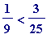
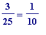

Fibonacci's greedy algorithm
What I write here is meant only to be a summary after the event , after the playing/experimentimg/teaching has been done in some way...
Let's start with a (well-chosen!) example like '
 '. Let's try to fill in the question marks on the right-hand side of:
'. Let's try to fill in the question marks on the right-hand side of:
 = ? + ? + ... + ? [e]
= ? + ? + ... + ? [e]
with distinct unit fractions . What unit fractions might one try? An obvious initial observation is that one could not use , ... (Why? Because they are too big in relation to ). And where does the '...' end? Of course it ends at because (which is ), while  .
So, [e] could
- not commence with + ? + ... + ?,
- nor with + ? + ... + ?,
- nor with ...
-
nor
with
+ ? + ... + ?,
but
- it could commence with + ? + ... + ? [e9], and
- it could also commence with  + ? + ... + ? [e10], and
- it could also commence with + ? + ... + ? [e11] etc , etc
So much choice ! An infinite amount of choice, in fact... which is what makes it all so interesting...
Suppose one made the choice in [e9]; then one would
do the obvious thing
: subtract
 from the right-hand side of [e9] giving
from the right-hand side of [e9] giving
= = ? + ... ? [e9', is unfinished]
But if one made the choice in [e10] then one would have
= = [e10', is finished]
Thus .
If one were to continue with the '
 ' in [e9'] by setting
' in [e9'] by setting
= ? + ... + ? [e9'']
then the
first possible unit fraction
(as we did earlier to produce the initial '
 '; this is an
important detail
which I will return to in a moment) that one could use is
, giving:
+ ... + ? [e9''']
'; this is an
important detail
which I will return to in a moment) that one could use is
, giving:
+ ... + ? [e9''']
Thus = , and so the initial choice of has led to